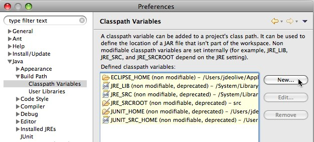
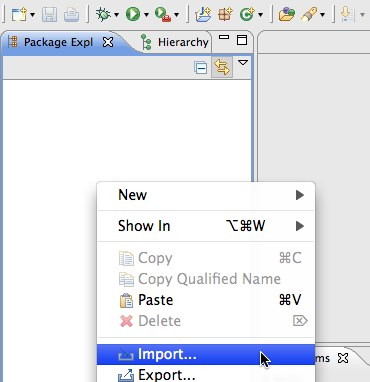
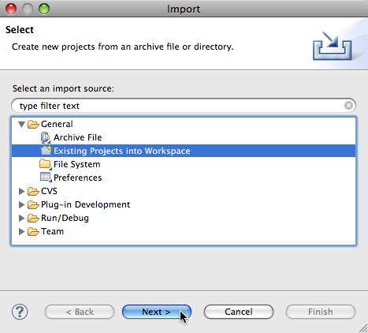
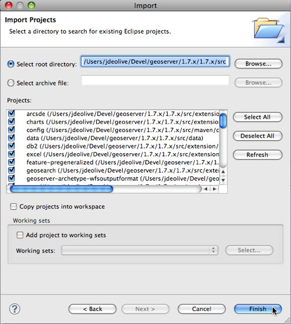
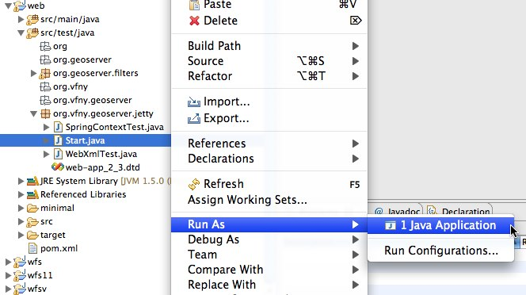

Quickstart¶
A step by step guide describing how to quickly get up and running with a GeoServer development environment. This guide assumes that all the necessary Tools are installed.
Note
This guide is designed to get developers up and running as quick as possible. For a more comprehensive guide see the Maven Guide and the Eclipse Guide.
Check out source code¶
Clone the GeoServer git repository:
git clone git://github.com/geoserver/geoserver.git geoserver
The default branch of the repository is the master branch is the current unstable development branch. To switch to a stable branch:
cd geoserver
git checkout 2.2.x
In this example we will pretend that you checked the source out into a directory called geoserver.
Build with Maven¶
Change directory to the root of the source tree and execute the maven build command:
cd geoserver/src
mvn clean install
A successful build will result in something like the following output:
[INFO]
[INFO]
[INFO] ------------------------------------------------------------------------
[INFO] Reactor Summary:
[INFO] ------------------------------------------------------------------------
[INFO] GeoServer ............................................. SUCCESS [10.271s]
[INFO] GeoServer Maven Plugins ............................... SUCCESS [0.865s]
[INFO] Configuration Deployment PlugIn ....................... SUCCESS [3.820s]
[INFO] GeoServer Maven Archetypes ............................ SUCCESS [0.054s]
[INFO] GeoServer WFS Output Format Archetype ................. SUCCESS [0.390s]
[INFO] Core Platform Module .................................. SUCCESS [5.270s]
[INFO] Data Module ........................................... SUCCESS [4.521s]
[INFO] Open Web Service Module ............................... SUCCESS [2.730s]
[INFO] Main Module ........................................... SUCCESS [10.077s]
[INFO] Web Coverage Service Module ........................... SUCCESS [3.785s]
[INFO] Web Coverage Service 1.1.1 Module ..................... SUCCESS [5.254s]
[INFO] Validation Module ..................................... SUCCESS [1.131s]
[INFO] Web Feature Service Module ............................ SUCCESS [6.695s]
[INFO] Web Feature Service Module ............................ SUCCESS [1.197s]
[INFO] Web Map Service Module ................................ SUCCESS [8.519s]
[INFO] Geoserver REST Support Code ........................... SUCCESS [3.366s]
[INFO] GeoWebCache (GWC) Module .............................. SUCCESS [0.255s]
[INFO] Web Application Module ................................ SUCCESS [27.386s]
[INFO] Community Space ....................................... SUCCESS [0.312s]
[INFO] GeoServer Extensions .................................. SUCCESS [0.071s]
[INFO] ------------------------------------------------------------------------
[INFO] ------------------------------------------------------------------------
[INFO] BUILD SUCCESSFUL
[INFO] ------------------------------------------------------------------------
Generate Eclipse project files with Maven¶
Generate the eclipse .project and .classpath files:
mvn eclipse:eclipse
Import modules into Eclipse¶
Run the Eclipse IDE
Open the Eclipse Preferences
Navigate to Java, Build Path, Classpath Variables and click New...
Create a classpath variable named “M2_REPO” and set the value to the location of the local Maven repository, and click Ok

Click Ok to apply the new Eclipse preferences
Right-click in the Package Explorer and click Import...
Select Existing Projects into Workspace and click Next
Navigate to the geoserver/src directory
Ensure all modules are selected and click Finish

Run GeoServer from Eclipse¶
From the Package Explorer select the web-app module (web in 1.7.x or earlier)
Navigate to the org.geoserver.web package (org.vfny.geoserver.jetty in 1.7.x or earlier)
Right-click the Start class and navigate to Run as, Java Application

Access GeoServer front page¶
- After a few seconds, GeoServer should be accessible at: http://localhost:8080/geoserver
- The default admin password is geoserver.